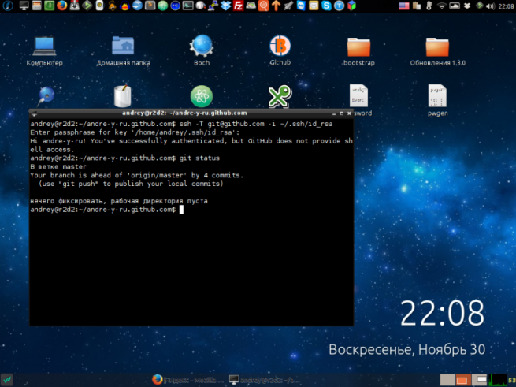

Поздравляю всех своих читателей С новым годом! Желаю чтобы в новом году осуществились все ваши намеченные планы. Весёлых, энергичных и самое главное незабываемых новогодних праздников.
Сегодня, я хотел с вами поделиться своим опытом оживления ноутбука прошлого времени. Где память равна мегабайтам, а процессор прошлого поколения celeron. С частотой 1.6 МГц. Пространство диска ограничено 40-ка Гигабайт.
Идея была вполне простой и понятной. Поставить лёгкий дистрибутив под операционной системы *Linux. Выбор был достаточной прост, лично я предпочитаю Debian, но всё таки решил поставить упрощенный вариант Ubuntu. Вы уже наверно догадались, что это Runtu. Всё завелось с пол пинка и заработало с коробки.
“XP морально уже надоела и душа просит чего то нового.”
Ранее на данной ноутбуке стояла XP Home, очень хорошая и надёжная система. Но XP морально уже надоела и душа просила чего то нового, современного. Да и вирусы уже порядком надоели. А самое главное что мне нравиться в *unix системах, это то что, всё можно настроить так как действительно хочется.
Собственно это изображение робочего стола системы.

Из интересного можно даже запрограммировать нажатия кнопок на клавиатуре. Ну нравится мене работать через терминал тут нечего не поделаешь. Насчёт программ можно не беспокоится, здесь их полным полно.
Производительность даже увеличилась. Хоть и не в разы, но вполне ощутимо. Единственный недостаток, это то что интегрированная видеокарта intel, так и не заработала. Для меня это несущественно, всё равно в игры, я на нем не планировал играть. Ноутбук для работы, записи песен и подкастов. Всё работает счастливый как слон.
Runtu — российский дистрибутив Linux, базирующийся на пакетной базе Ubuntu, использует в качестве графической среды GNOME и приложения на GTK+. Также существуют сборки с более легковесными окружениями рабочего стола XFCE и Openbox. Идея Runtu — простота и доступность Ubuntu, соединённая с русской локализацией и набором необходимого программного обеспечения, готового к использованию сразу после установки. Дистрибутив использует репозиторий Ubuntu и Launchpad PPA.
Данный Материал был взят из Википедии — свободной энциклопедии →
“Пример повседневных скриптов.”
На посмотреть выложу видео использования простых скриптов на #bash.
#!/bin/bash
find -name "*.torrent" -exec cp '{}' ~/Btsync/btorrent \;
find -name "*.torrent" -exec mv '{}' ~/Загрузки/btorrent \;
#!/bin/bash
find -name "*.avi" -exec mv '{}' ~/Видео \;
find -name "*.mkv" -exec mv '{}' ~/Видео \;
Hi tech video. Мой очередной новый проектик. Пока без заставки и представлений. Смотрим!
Chip#01 from Andre-y-ru on Vimeo.